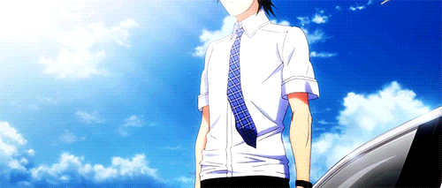
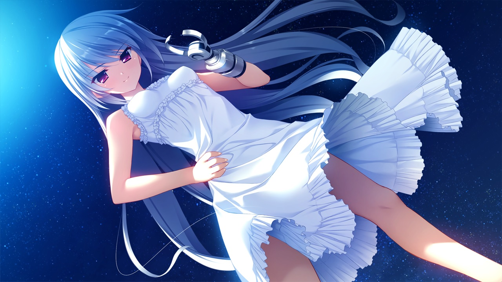
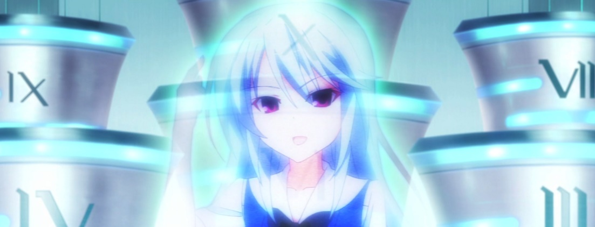

Heath Oslo is the main antagonist of the third and final novel Grisaia no Rakuen. Heath Oslo was the one who trained Yuuji Kazami to be a successful Assassin.
Kazami Yuuji's role comes in at the very end of the series when he heads out to assassinate Heath Oslo.
Kazami Kazuki is Yuuji Kazami's elder sister who disappeared in an accident when Yuuji was ten years old. Despite her delicate and diminutive body, she is so intelligent that she can be called a genius. She is the same age as Amane and both of them went to the same school, “Takizono Private Academy”, and were in the basketball team of the school. She "died" in an bus accident which greatly influences Yuuji's and Amane's future life.
Kusakabe Asako(left) was Yuuji's former master. She took charge of raising Yuuji when his parents passed away. She had died a year before Yuuji enrolled in Mihama Academy. After her death, her friend, JB, became Yuuji’s guardian. Yuuji once said “She had a rough personality”. She is now cremated and has her grave stone on the mountains in Yamanashi Prefecture alongside John where she and Yuuji used to live. Harudera Yuria(right) is Yuuji's guardian and superior, also case officer at Ichigaya. Her former name is Julia Bardera but she changed it after moving to Japan and that’s why Yuuji calls her JB. Though she looks like an American, she is a mixed-blood between German and Italian.
After her "death", her mind was intergrated with the Thanatos System by CIRS. Later on, it was found that she has a body, that seems to be functional. She pulls all the strings in Yuuji's rescue plan.